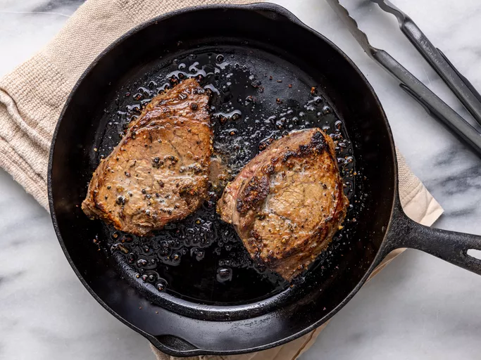

Pan-Seared Steak

Description
This Pan-Seared Steak recipe creates a juicy, flavorful steak with a golden-brown crust. Seasoned simply with salt and pepper, the steak is seared in a hot pan, then basted with butter, garlic, and fresh herbs for extra flavor. Letting it rest after cooking ensures a tender, mouthwatering steak with every bite. Perfect for an easy yet impressive meal!
Ingredients
- 2 ribeye or sirloin steaks (about 1-inch thick)
- 2 tablespoons olive oil
- Salt and pepper
- 2-3 cloves garlic, smashed
- 3 tablespoons butter
- Fresh thyme or rosemary sprigs(optional)
Instructions
-
Prepare the Steaks:
- Take the steaks out of the fridge and let them come to room temperature for about 30 minutes.
- Pat them dry with a paper towel, then season both sides generously with salt and pepper.
-
Heat the Pan:
- Heat a large cast-iron skillet or heavy-bottomed pan over high heat until it’s very hot.
- Add olive oil to the pan and let it heat for a few seconds.
-
Sear the Steaks:
- Place the steaks in the hot pan and sear for 2-3 minutes without moving them. Flip the steaks and sear for another 2-3 minutes on the other side (for medium-rare).
- Add the smashed garlic, butter, and thyme or rosemary to the pan.
-
Baste the Steaks:
- Tilt the pan slightly to pool the melted butter and use a spoon to baste the steaks with the butter-garlic-herb mixture for about 1-2 minutes.
-
Rest the Steaks:
- Remove the steaks from the pan and let them rest on a plate for 5 minutes to allow the juices to redistribute.
-
Serve:
- Slice and serve your perfectly seared steak with your favorite sides like mashed potatoes or a fresh salad.